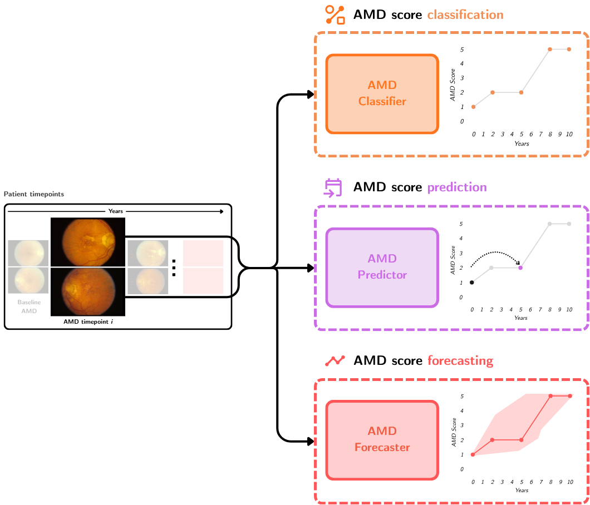
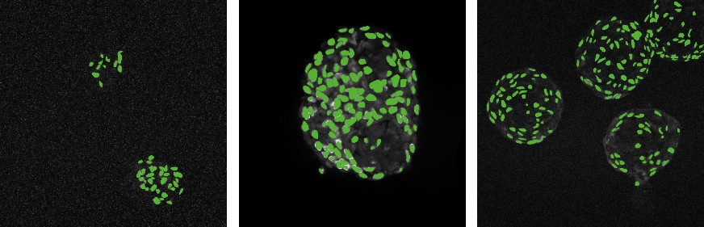
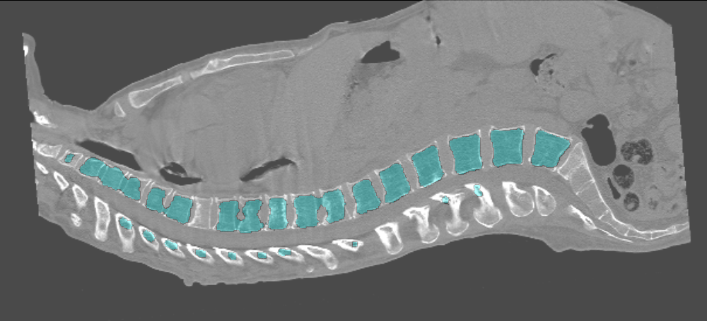
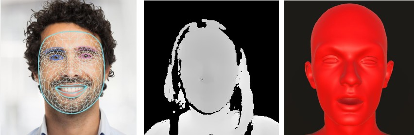
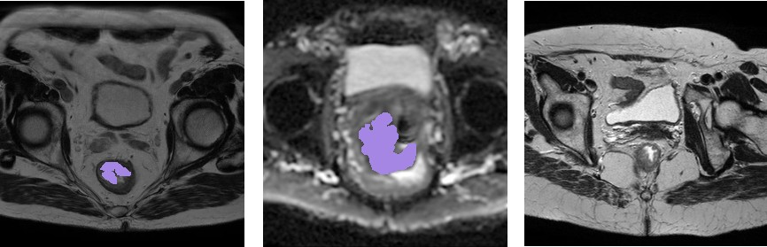
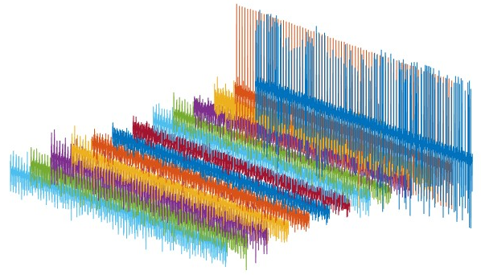
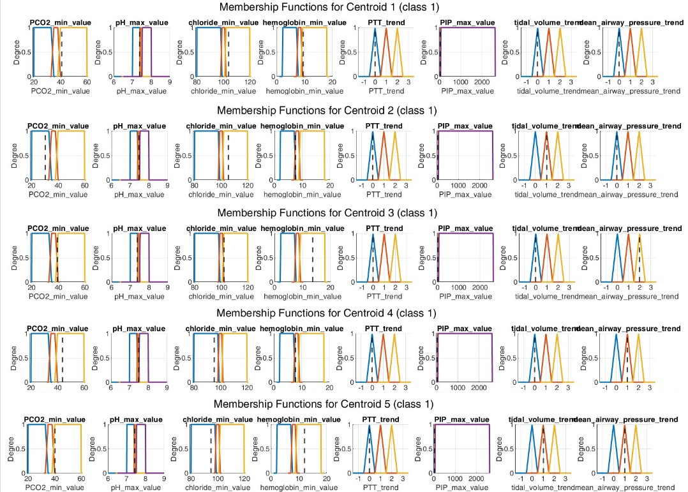
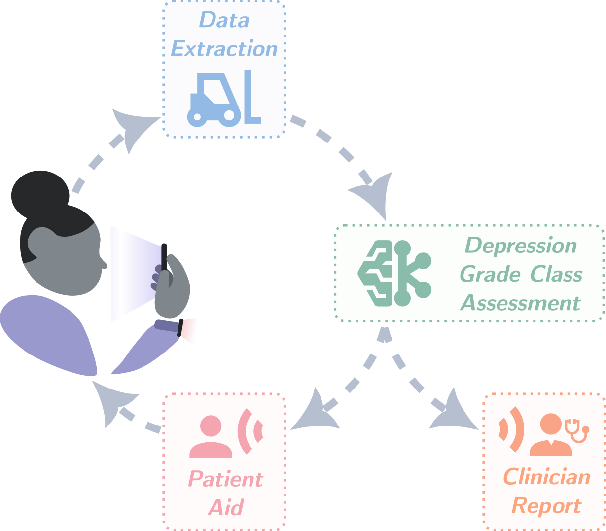
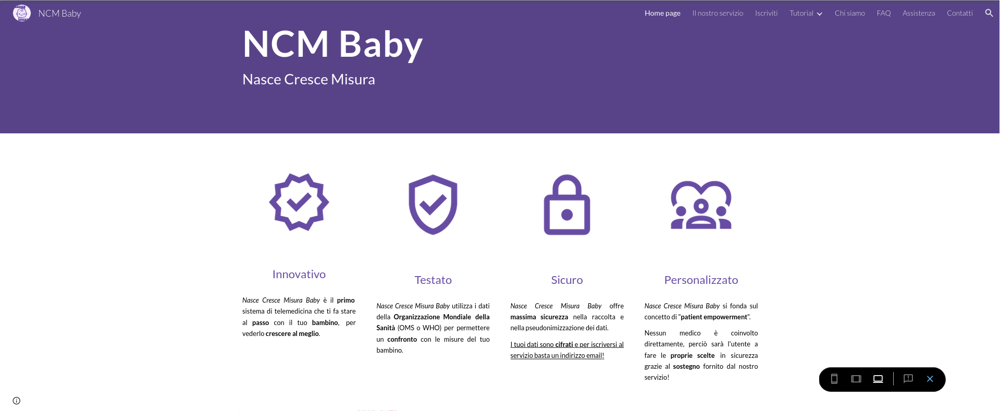

Experience
Guest Researcher
The University of Osaka (Osaka, Japan)
Intelligence and Sensing Laboratory (ISLab)
WPI Premium Research Institute for Human Metaverse Medicine (WPI-PRIMe)
Visiting research on Vision-Language Models and Neural Dynamical Systems applied to ophthalmology.
Publications
IEEE-EMBS International Conference on Biomedical and Health Informatics (BHI 2026) - Hong Kong
Exploring the Latent Structure of AMD Severity Using Retinal Foundation Models
Fineschi N., Panic J., Watanabe A., Hayashi H., Nishimura K., Maeno Y., Rosati S., Balestra G., Nishida K., Nagahara H.
Academic service
Master Thesis

Through the eyes of a Vision-Language Model
Age-related Macular Degeneration analysis using fundus images
Probing visual latent spaces of multiple Vision-Language Models applied on retinal fundus images for Age-related Macular Degeneration. Statistical connection between AMD phenotypes and latent dimensions allows the implementation of three interconnected tasks:
- Classification of current disease status through multiple downstream tasks, coupled with SHAP explainability;
- Prediction of discrete future progression through multiple downstream tasks, coupled with SHAP explainability;
- Forecasting of longitudinal trajectories from irregularly sampled data through multiple Neural Dynamical Systems, coupled with uncertainty quantification and explainability maps.
Interests
Topics
- Longitudinal modeling
- Representation learning
- Explainable AI
- Deep learning
Modalities
- Medical imaging
- Clinical data
- Biomedical signal processing
- Genomics
Methodologies
- Neural Dynamical Systems
- Neural Ordinary Differential Equations
- Vision-Language Models
Education
MSc in Biomedical Engineering
eHealth (Artificial intelligence and data science in healthcare) specialization
Politecnico di Torino (Turin, Italy)
Other experience
Data acquisition and analysis for clinical infrastructure Joint Commission International accrediting.
Deep Learning Projects

▸ Cardiosphere cell segmentation from microscopy images

▸ Backbone segmentation from CT-scan images
Machine Learning Projects

▸ Low-stakes lie detection from face video acquisitions

▸ Rectal cancer CAD systems from T2 MRI/ADC images

▸ Gait status prediction from lower limbs EMG signals

▸ Ventilation weaning prediction using clinical data
▸ Target-reaching exergaming for muscle rehabilitation from video acquisitions
Miscellaneous Projects

▸ Depression detection system using video, speech and heart data
▸ Software design for heart-failure telemonitoring platform

▸ Baby growth telemonitor platform from body measurements
Research skills
Data Science
- Statistical Analysis
- Multimodality
- Classification
- Segmentation
- Forecasting
Machine / Deep Learning
- Feature Engineering
- Feature Selection
- Machine Learning Models
- Explainable AI
- Uncertainty Quantification
- Vision-Language Models
Neural Dynamical Systems
- Neural Differential Equations
- Neural Stochastic Differential Equations
- Neural Delay Differential Equations
- Liquid Neural Networks
- Deep State-Space Models
- Neural Operators
Coding
Languages
- Python
- MATLAB
- R
- HTML
Python Libraries
- PyTorch
- scikit-learn
- TensorFlow
- torchdiffeq
- WebDataset
- MediaPipe
Tools
- Git
- Google Colab
- Kaggle
- Linux Environment
Software
Documents
- LaTeX
- Office Suite
Graphics and Design
- 3D Slicer
- Canva
- GIMP
- Inkscape
3D Modeling
- SolidWorks
- Unity
Soft skills
Languages
- Italian (C2)
- English (C1)
- Japanese (A1)
Transversal
- Interfacing with clinicians
- Working with international researchers
- Presenting research findings